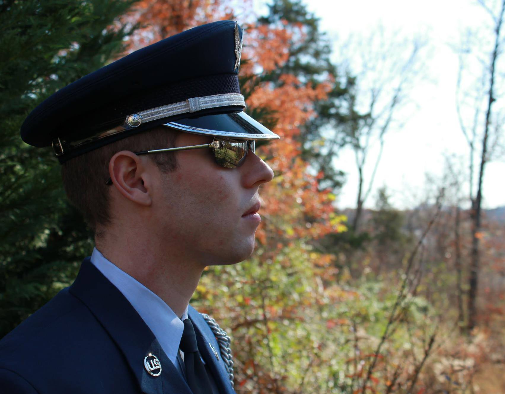

Blogs
empty blog 1
empty blog 2
This is about becoming a programmer, finding a calling, learning html, css, javascript, and possibly having a little fun along the way.
My Name is Michael David Pitts, which means “God’s Champion”. I was born on the 26th of September, in the year of our Lord Jesus Christ 1986. I am the first-born son of David Gene Pitts, who was the first-born son of Bob Pitts. I hail from Tulsa Oklahoma USA.
empty blog 1
empty blog 2